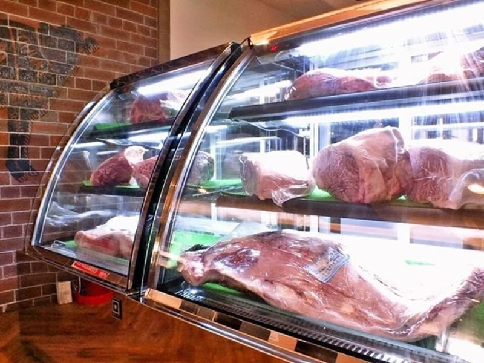
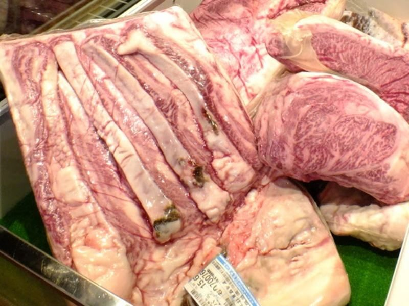
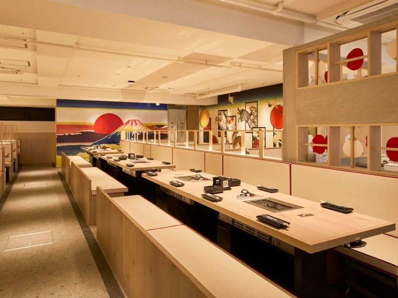

リンクをコピーしました
新宿 · JR東口 徒歩5分
A4・A5 黒毛和牛焼肉食べ放題 ¥4,500〜
和牛焼肉食べ放題 肉屋の台所 新宿東口2号店
肉屋直営。契約ファームから塊で仕入れ、毎日店内で解体・カット。だからA5の霜降り和牛が、納得の価格で食べ放題。100分・席からQRで注文。
焼肉・食べ放題・セノビル7F・新宿三丁目駅 徒歩3分
★Google 4.6（724件）
食べ放題 ¥4,500〜¥10,000お一人様・税込・ドリンク別
ひと目でわかる
毎日 12:00〜23:00 営業
昼から営業・定休日なし
カード・Alipay・WeChat Pay可
チャージ料なし
全コース、ドリンク飲み放題の選択が必須（ソフト+¥500／アルコール+¥1,500）
この価格で和牛が食べ放題の理由

1契約ファームから一括仕入れ
中間マージンを省き、農場から直接まとめて仕入れています。

2自社職人がブロック解体・毎日カット
高級店で1万円する希少部位も、自社解体だから食べ放題に。

3席から注文、出来たてを提供
テーブルのQRから注文。1回5品まで、コース開始時に和牛3種盛りをサービス。
価格はお一人様・税込。全コースでドリンク飲み放題（ソフト+¥500／アルコール+¥1,500）の選択が必要です。未就学児無料・小学生¥1,000引き。誕生日の「肉パフェ」「肉ケーキ」は要予約（+¥1,500）。
クチコミで多い言葉
食べ放題79カレー25提供スピード16選べる種類16QRコード注文11海鮮10神戸牛8卵かけご飯7
店舗情報・アクセス
- 住所
- 東京都新宿区新宿3-18-4 セノビル7F
- 営業時間
- 12:00〜23:00定休日なし・コース最終スタート 21:20（100分）
- 電話
- +81-3-6274-870003-6274-8700
タクシーの運転手さんに見せてください
新宿区新宿3-18-4 セノビル7F
肉屋の台所 新宿東口2号店
- JR新宿駅東口から徒歩約5分。新宿通りを伊勢丹方面（東）へ、伊勢丹の手前左手のセノビル。エレベーターで7Fへ。
- 東京メトロ・都営「新宿三丁目」駅から徒歩約3分。地下通路19番出口を出てすぐ。
- 昼12時から営業。遅めのランチや早めのディナーにも（週末18〜21時が最も混雑）。